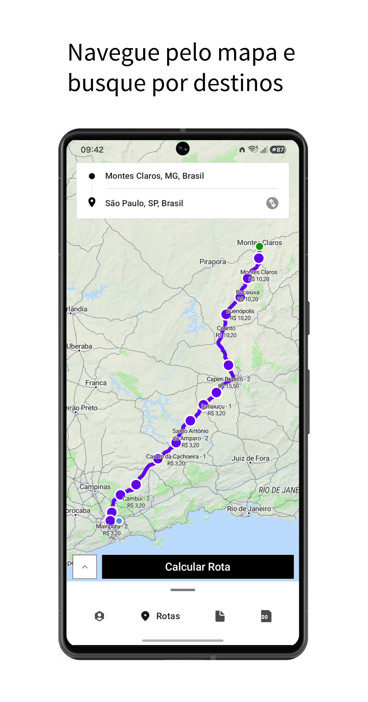
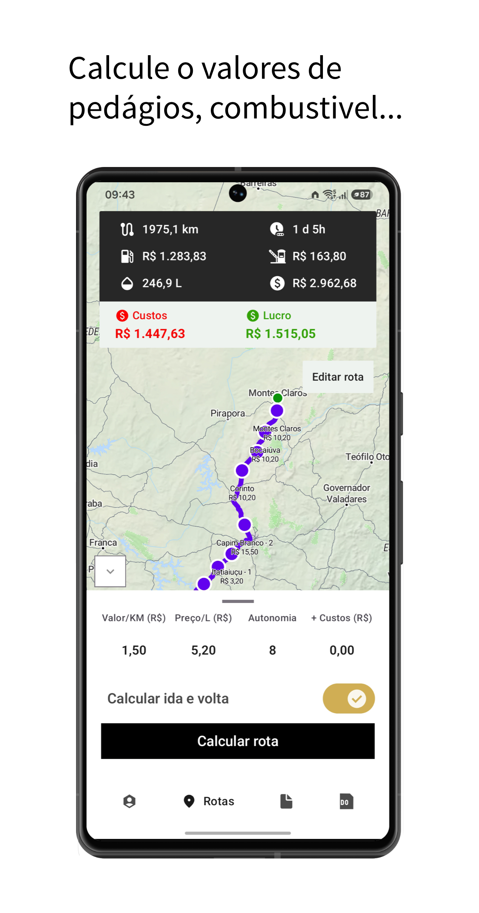
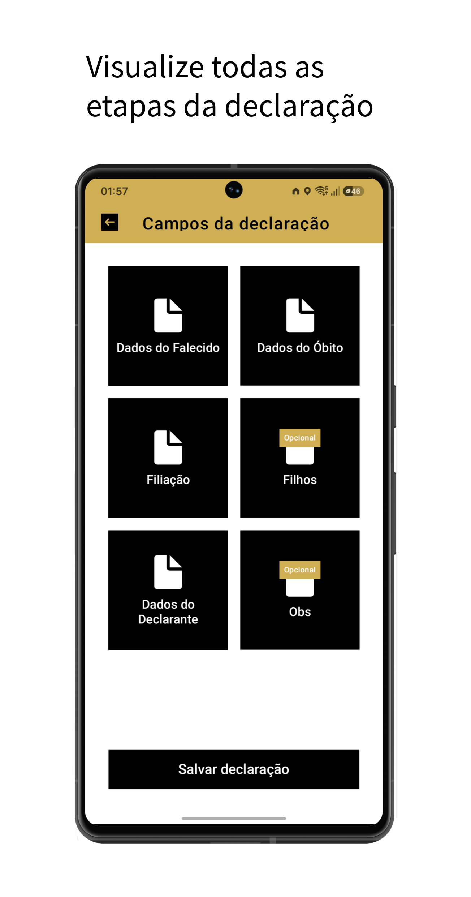
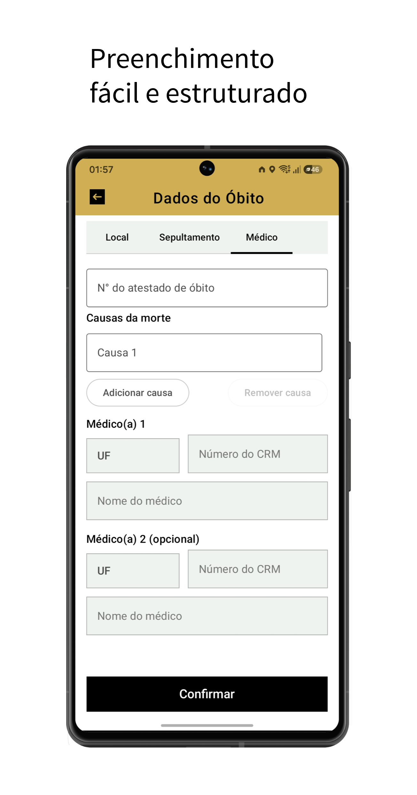
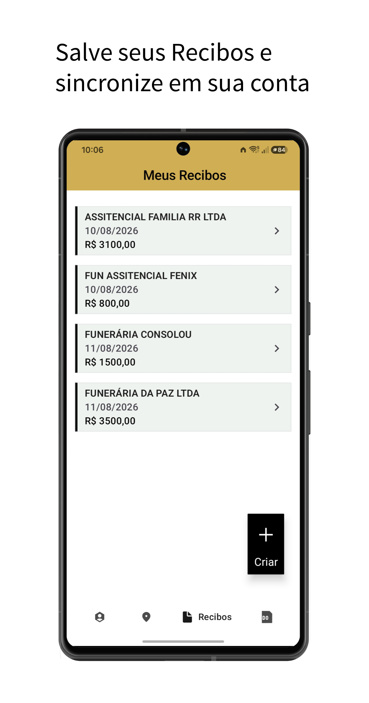
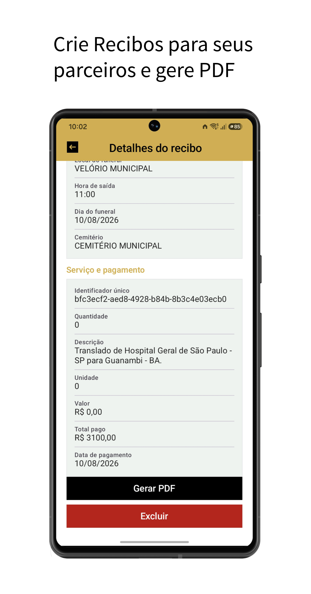

O que o app faz
Um app, três frentes do seu dia a dia
O W-Via reúne as tarefas que hoje ficam espalhadas entre papel, WhatsApp e planilha.
Traslados e roteirização
Registre e acompanhe traslados com rotas otimizadas, simule viagens de um ponto a outro sem depender de anotações soltas.
Recibos automáticos
Gere recibos formais em PDF a cada serviço prestado, prontos para entregar à família.
Declaração de Óbito guiada
Preenchimento estruturado em etapas, com campos condicionais por idade e sexo biológico — reduzindo erro no momento mais delicado.
Tudo no seu dispositivo
Sem servidor e sem nuvem: traslados, recibos e declarações ficam armazenados apenas no seu aparelho, e o app funciona sem conexão.
Por dentro do app
As telas do W-Via
Veja como o dia a dia do agente funerário fica mais simples: do mapa ao recibo em PDF, tudo no mesmo aparelho.






Arraste para o lado para ver mais telas.
Fluxo real
Da chamada à documentação, em quatro passos
O mesmo caminho que você já segue — só que sem retrabalho.
Você registra o chamado
Dados do serviço e do destino do traslado entram no app assim que o atendimento começa.
A rota é calculada
O W-Via sugere o trajeto e mantém o histórico do deslocamento.
A Declaração de Óbito é preenchida
Formulário em etapas, com validação de campos conforme a idade e o sexo biológico do falecido.
O recibo é gerado
PDF pronto para entrega, com os dados do serviço já preenchidos.